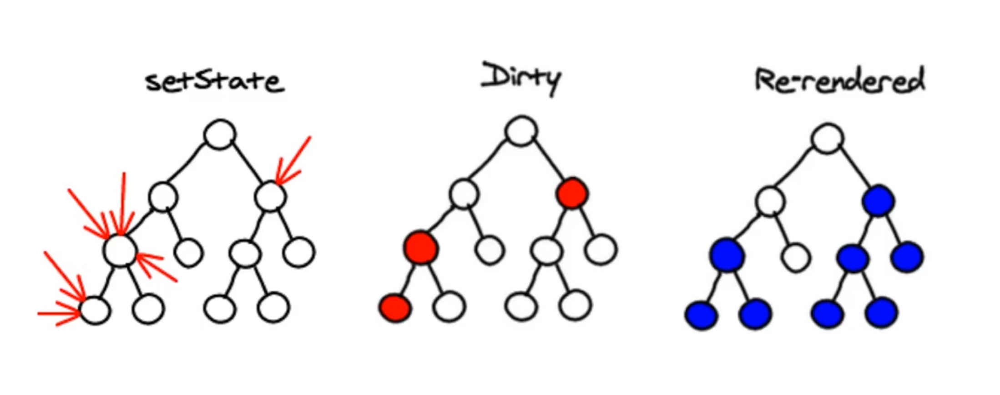
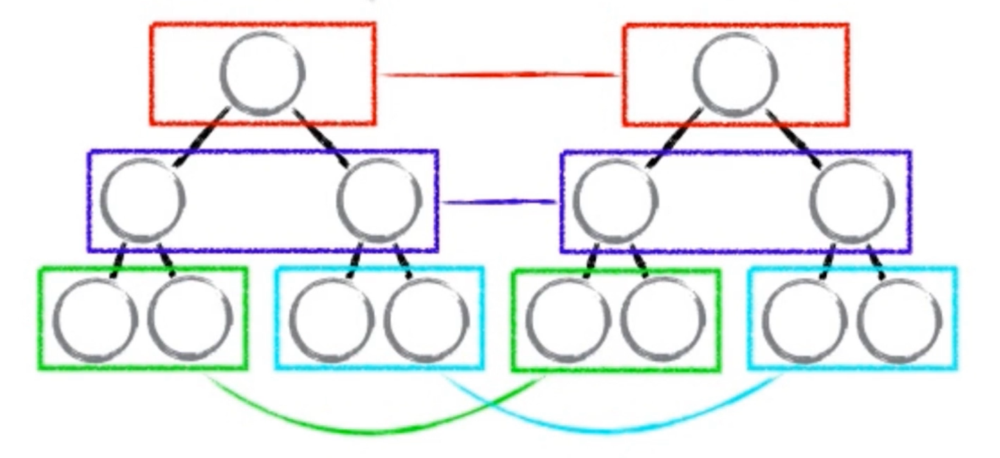
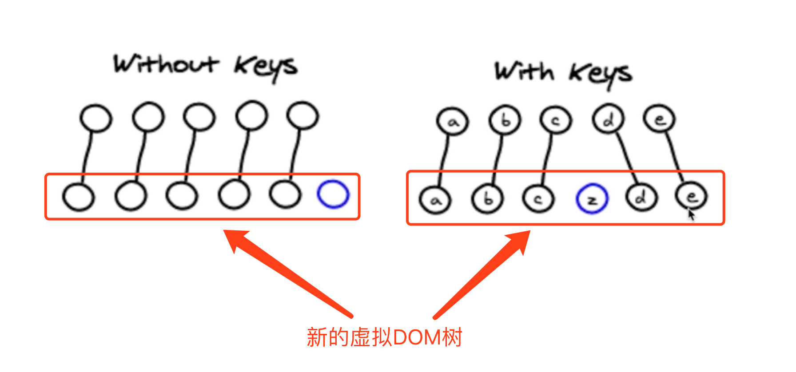
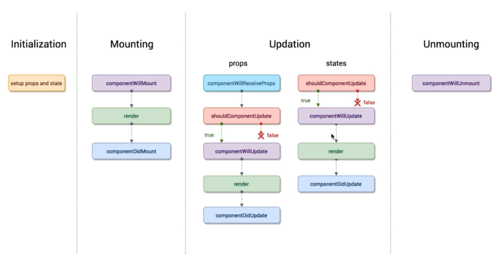

1. 什么是React?
react其实就是一个2013年被facebook开源了的，用于构建前端用户页面的javascript库（UI框架）。
2. JSX
2.1. JSX 中写注释
{/* 这是注释 */}
{
// 注释
}
2.2. JSX 中写label
<label htmlFor="inputArea">请输入</label>
<input type="text" id="inputArea" value={this.state.inputValue} onChange={ this.handleInputChange.bind(this) }/>
2.3. JSX 如何对输入的 html 不转义
- dangerouslySetInnerHTML: 用于指定对显示的内容不做转换。
<li
key={index}
onClick={ this.handleLiDelete.bind(this, index) }
dangerouslySetInnerHTML={{__html: item}}>
{
// item
}
</li>);
3. 数据传递
3.1. 父组件向子组件传值
- 父组件向子组件传递数据，通过属性传递
- 子组件通过this.props拿取数据
3.2. 子组件向父组件传递数据
4. props、state 和 render()之间的关系
react是一个数据驱动的框架。但是 它背后的原理是怎么样的呢？为什么数据发生变化，页面就会跟着变化？那么，弄明白props、state和render()三者之间的关系就明白了！
数据和页面时如何联动的呢？
- 当组件的state或者props发生改变时，render()函数就会被重新执行。render()函数就会拿到最新的数据去重新渲染页面。
5. 虚拟DOM
我们上面说了，当数据发生改变时，react 的render()函数重新渲染页面。那么，如果没有react 我们该怎么做呢？
版本 - 1：
- state 数据
- JSX 模板
- 数据 + 模板 结合。生成真实的 DOM, 来显示。
- state 改变
- 数据 + 模板 结合，生成真实的 DOM, 替换原始的 DOM。
这种实现的致命缺陷：
- DOM替换性能消耗太大。
改进：
- state 数据
- JSX 模板
- 数据 + 模板 结合。生成真实的 DOM, 来显示。
- state 改变
- 数据 + 模板 结合，生成真实的 DOM, 并不直接替换真实的DOM。
- 对比新生成的DOM 和 页面原来的DOM。找出不同(更新、改动)的地方。
- 只替换需要更新的dom, 没有更新的不动。
缺陷：性能提升并不明显。
改进2：
- state 数据
- JSX 模板
- 数据 + 模板 结合。生成真实的 DOM, 来显示。
- 生成虚拟DOM（模拟DOM的一个JS对象，用它来描述真实的DOM）（损耗了性能）
- state 数据发生变化。
- 生成新的虚拟DOM。（极大的提升了性能）
- 比较原始虚拟DOM 和 新的虚拟DOM，找出区别。（极大的提升了性能）
- 直接操作DOM，更新改变的DOM。
5.1. 什么是虚拟 DOM ?
虚拟 DOM 就是用JS来模拟的DOM。即虚拟DOM就是一个JS对象，真实的DOM有什么，我们都可以用这个JS对象来模拟（如，标签名，属性、文本节点）。
5.2. 深入理解虚拟 DOM
JSX -> createElement -> 虚拟DOM (JS对象) -> 真实的DOM
- state 数据
- JSX 模板
- 数据 + 模板 结合，生成虚拟DOM（模拟DOM的一个JS对象，用它来描述真实的DOM）（损耗了性能）。
- 用虚拟DOM结构生成真实的DOM, 来显示。
- state 发生改变。
- 数据 + 模板 生成新的虚拟DOM（极大的提升了性能）。
- 比较原始虚拟DOM 和 新的虚拟DOM，找出区别。（极大的提升了性能）。
- 直接操作 DOM。修改变化的DOM。
5.3. 虚拟 DOM 的优点
- 性能提升了。
- 使得跨端应用得以实现。（在浏览器里面，虚拟DOM最终被转化成真实的DOM；在原生应用里面，虚拟dom，最终被转换成可以被原生应用识别的元素应用组件。这样一来，同一份虚拟DOM, 就可以在不同设备上重复使用）
5.4. 虚拟 DOM 中的Diff算法
- diff算法提升了比对两个虚拟dom的效率。

setState() 是异步的。这么设计的初衷是为了提高react底层的性能。
5.4.1. diff 算法有个很重要的概念：同级(层)比较。
- 当一层的虚拟DOM不同时，那么，下面的虚拟DOM就不会比较了。而是直接替换掉。
- 虽然，这样DOM替换上性能有所消耗，但是，简化了diff算法比对的复杂度和提升了比对的性能。

5.4.2. 提升比对性能 和 为什么key值不要用index。
- 为什么要给每个循环项添加key呢？为了提高对比虚拟DOM的效率。key值 就是我们给循环生成的虚拟节点起得别名。

我们假设一下，循环生成一组dom节点（上），当数据改变之后，重新生成一组新的虚拟DOM（下）。
为什么要尽量不用index作为key值呢？因为，我们使用key有个前提，就是不能改变之前原有的值（就不能保证，在原有的虚拟dom树上的key值，和新的虚拟dom树上的key值是对应的了）。如果使用index, 如，把新数据插入到数组中间，那么就新的index和旧的虚拟dom key对应的就不是一个dom了。
总结：
- key的值可以使用item
6. ref 的使用
- 在 react 中 ref 是用来直接获取 DOM 元素用的。但是，一般不太建议这么做。除非非要要到它不可。
<input type="text" id="inputArea"
value={this.state.inputValue}
onChange={ this.handleInputChange }
ref={(input) => {this.input = input}} />
handleInputChange() {
// this.setState({
// inputValue: e.target.value
// });
// const value = e.target.value;
// 当使用ref直接获取dom时
const value = this.input.value;
this.setState(() => ({
inputValue: value
}));
}
但是，我们说了setState() 是一个异步函数。所以，当你修改了数据之后，如果获取不到更新后的dom, 那么，你可以在setState()第二个参数函数中获取dom操作。
handleInputChange() {
// this.setState({
// inputValue: e.target.value
// });
// const value = e.target.value;
// 当使用ref直接获取dom时
const value = this.input.value;
this.setState(() => ({
inputValue: value
}, () => {
console.log( this.ul.querySelector('div').length );
}));
}
7. React 组件生命周期
- 注意：我们所说的生命周期是指组件的生命周期。即一个应用里面所以组件都有生命周期。


组件的生命周期可分成三个状态：
Mounting：已插入真实DOMUpdating：正在被重新渲染Unmounting：已移出真实DOM
生命周期的方法有：
- (1)
componentWillMount在渲染前调用, 在客户端也在服务端。 - (2)
componentDidMount: 在第一次渲染后调用，只在客户端。之后组件已经生成了对应的DOM结构，可以通过this.getDOMNode()来进行访问。 如果你想和其他JavaScript框架一起使用，可以在这个方法中调用setTimeout,setInterval或者发送AJAX请求等操作(防止异步操作阻塞UI)。 - (3)
componentWillReceiveProps在组件接收到一个新的prop(更新后)时被调用。这个方法在初始化render时不会被调用。 - (4)
shouldComponentUpdate返回一个布尔值。在组件接收到新的props或者state时被调用。在初始化时或者使用forceUpdate时不被调用。 可以在你确认不需要更新组件时使用。 - (5)
componentWillUpdate在组件接收到新的props或者state但还没有render时被调用。在初始化时不会被调用。 - (6)
componentDidUpdate在组件完成更新后立即调用。在初始化时不会被调用。 - (7)
componentWillUnmount在组件从DOM中移除之前立刻被调用。
7.1. React 生命周期函数使用场景演示
- 在
constructor中绑定作用域。在一定程度上提升了性能。 - 虚拟dom，同层比对，key值，来提升性能。
- 用于优化组件树更新，提升应用性能。
- 统一在 componentDidMount 中发送
ajax请求。 - 使用axios
7.1.1. 在 constructor 中绑定函数作用域
constructor(props) {
super(props);
this.state = {
inputValue: '',
list: ['学习英语', '学习react']
};
// 绑定函数作用域
this.handleInputChange = this.handleInputChange.bind(this);
this.handleBtnClick = this.handleBtnClick.bind(this);
this.handleLiDelete = this.handleLiDelete.bind(this);
}
7.1.2. 优化组件树，提升应用性能
因为，react中，默认情况下，当父组件数据更新导致父组件中的render()函数更新之后，其子组件也会被更新。即便子组件内的数据没有变化也会被更新。这样一来，就导致了一个性能问题。
怎么解决 提升性能呢？我们在组件生命周期的shouldComponentUpdate 函数中添加判断逻辑 —— 只有当传入子组件的props或者state发生改变时才更新组件。
通过使用 shouldComponentUpdate 函数，就可以避免无谓的 render 函数的执行。从而提升性能。使用 shouldComponentUpdate "询问"组件是否要更新，需要才更新。
// React内置的 setState 已经做了性能优化。它是异步的，当你做连续的多次数据操作时，这样就能在一次进行操作。这样做也就减少了虚拟dom的比对评率。提升了性能。
/**
* shouldComponentUpdate
* @param { Object } nextProps 组件更新时, 新的props
* @param { Object } nextState 组件更新时，新的state
*/
shouldComponentUpdate(nextProps, nextState) {
// 如果传给组件的content改变了， 重新渲染组件
if ( nextProps.content != this.props.content) {
return true;
} else {
return false;
}
}
7.1.3. 在 componentDidMount 生命周期函数中发送ajax请求
- 因为 componentDidMount 只执行一次。
7.1.4. 第三方模块 axios, 来发送ajax请求
在组件中，引入axiox（埃克塞死），并使用。
// 在组件中引入
import axios from 'axios'
// 使用
componentDidMount () {
axios.get('/api/todolist')
.then(() => {})
.catch(() => {});
}